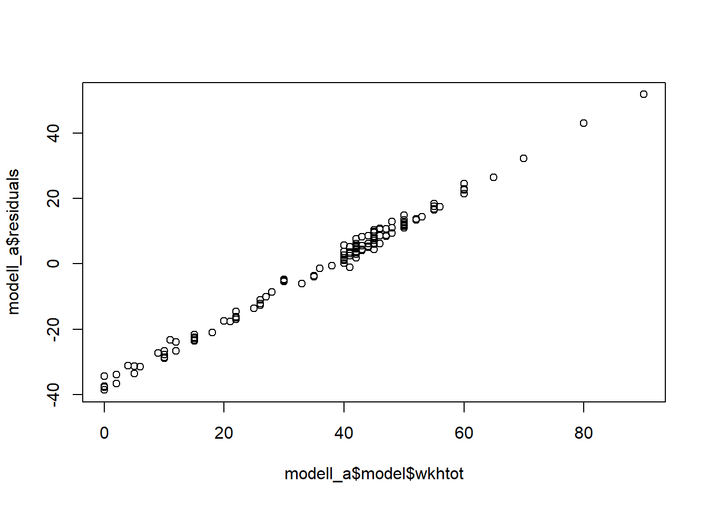

15 04. Aufgaben WP19
15.1 4.1 Einführung Regression: verschiedene Modelle
Aufgabe 1: Laden Sie Ihr Datenimport-Skript. Arbeiten Sie anschliessend in einem R Markdown-Dokument weiter.
#Nochmals zur Vollständigkeit:
setwd("C:/Users/SchweglG/R_Daten/06_HS21/R_Seminar-HS21")
source("ess_import.R")- Formulieren Sie zwei inhaltliche Fragestellungen, die Sie anhand unserer ESS-Daten mit einem einfachen (bivariaten) Regressionsmodell beantworten können. Eine der beiden Fragestellungen soll eine kategoriale Variable als unabhängige Variable enthalten. Nutzen Sie je ein Streudiagramm, um erste Hinweis zu Ihren Fragestellungen zu erhalten.
Die bivariate Regressionsanalyse berechnet die gerichtete (asymmetrische) Beziehung zwischen zwei metrischen Variablen, in der einfachsten Form einer unabhängigen Variable X auf eine abhängige Variable Y. Dabei repräsentiert X die Ursache und Y die Wirkung. Im Rahmen einer solchen Regressionsanalyse können auch kategoriale Variablen als unabhängige Variablen hinzugezogen werden. Bei kategorialen Variablen mit mehreren Ausprägungen wird allerdings ein multiples Modell generiert, das für die jeweiligen Ausprägungen einmal eine Referenzkategorie und für den Rest eine Dummy-Variable erstellt. Wir werden anschliessend noch sehen, was dies genau bedeutet.
Im folgenden Arbeitn wir mit vier verschiedenen Beispielen, zuerst zwei für rein metrische Modelle:
- “eduyrs” & “wkhtot”: Oesch, Leutener, Keller
plot(daten_ess$eduyrs, daten_ess$wkhtot)- “agea” & “happy”: Lattmann, Bazzingher
plot(daten_ess$agea, daten_ess$happy)Und zwei Beispiele für Modelle, die eine kategoriale Variable enhalten:
- “gndr” & “edyurs”: Meyer, Haab
plot(daten_ess$gndr, daten_ess$eduyrs)
plot(jitter(as.numeric(daten_ess$gndr)),
jitter(as.numeric(daten_ess$eduyrs)))Als Frage vorab: Hier scheint kein Zusammenhang vorhanden zu sein. Was ist das Problem? Und wie könnten wir das anders angehen?
- “eisced” & “Einkommen”:
plot(daten_ess$eisced, daten_ess$hinctnta)
plot(jitter(as.numeric(daten_ess$eisced)),
jitter(as.numeric(daten_ess$hinctnta)))
plot(daten_ess$eisced, factor(daten_ess$hinctnta))Bei folgendem Beispiele scheint Problem vorhanden zu sein… Was ist schief gelaufen?
“agea” & “polintr”: Sigrist, Lattmann, Haab
plot(jitter(daten_ess$agea),
jitter(as.numeric(daten_ess$polintr)))Als Frage: Wäe dasselbe Problem bei “happy” auch vorhanden? Und was wäre bei “eisced?”
hist(daten_ess$happy)
plot(daten_ess$eisced)- Formulieren und überprüfen Sie Ihre beiden Modelle mittels der Funktion
lm(). Machen Sie sich dazu vorab mit dieser Funktion vertraut (Hilfeseite der Funktion, Online-Tutorials …). Erläutern Sielm()kurz in eigenen Worten!
?lmDie Funktion lm() ist der Befehl in R zur Berechnung von linearen Modellen allgemein. Er “übersetzt” die normale Regressionsgleichung: y = b0 + b1x + e zur Formulierung response ~ term. Mit der überstetzten Formel können dann auch multiple, lineare Regressionen dargestellt werden, response ~ term + term, oder um Interaktionsterme ergänzt werden: response ~ term + term * term. Die weiteren Argumente (neben der eigentlichen Formel sowie der Angabe des Datensatzes) erlauben etwa die Daten zu unterteilen, Gewichtungen einzubauen oder den Umgang mit fehlenden Werten genauer zu bestimmen. Im Folgenden brauchen wir die Funktion und ihre Argumente aber nicht weiter zu spezifizieren, sondern die Standardeinstellungen der Argumente reichen aus.
Wir wollen hier zwei Modelle ins Zentrum rücken, nämlich der Zusammenhang zwischen Bildungsjahren und Arbeitsstunden (“eduyrs” & “wkhtot,” a) und Ausbildungsniveau und Einkommen (b) – bei letzterem greifen wir aber auf “edulvla” (anstatt “eisced”), um das Einkommen zu erklären (“hinctnta”) .
#Modell a)
lm(formula = wkhtot ~ eduyrs, data = daten_ess)##
## Call:
## lm(formula = wkhtot ~ eduyrs, data = daten_ess)
##
## Coefficients:
## (Intercept) eduyrs
## 42.0991 -0.3883#Modell b)
lm(formula = hinctnta ~ edulvla, data = daten_ess)##
## Call:
## lm(formula = hinctnta ~ edulvla, data = daten_ess)
##
## Coefficients:
## (Intercept) edulvla.L edulvla.Q edulvla.C edulvla^4
## 5.0260 3.4796 -0.6466 0.2904 -0.4557- Weisen Sie Ihre Regressionsanalysen jeweils einem “Ergebnisobjekt” zu! Wie ist dieses Objekt aufgebaut? Welche Komponenten und Informationen beinhaltet es?
#Modell a)
modell_a <- lm(formula = wkhtot ~ eduyrs, data = daten_ess)
#Modell b)
modell_b <- lm(formula = hinctnta ~ edulvla, data = daten_ess)Die Funktion lm() generiert uns eine Listenobjekt mit 13 bzw. 14 weiteren Unterobjekten. Die genauen Details, was in diesen Ergebnisobjekten zu finden ist, können wir der Hilfeseite unter Value entnehmen.
?lm
str(modell_a)
str(modell_b)An object of class ‘lm’ is a list containing at least the following components:
1. coefficients: a named vector of coefficients
2. residuals: the residuals, that is response minus fitted values.
3. effects: the uncorrelated single-degree-of-freedom values obtained by projecting the data onto the successive orthogonal subspaces generated by the QR decomposition during the fitting process 4. rank: the numeric rank of the fitted linear model.
5. fitted.values: the fitted mean values.
6. assign: [GS: Nummern der Variablen]
7. qr: [GS: Werte des Vorhersagemodells/kleinste Quadrate in den beiden Dimensionen] weights: (only for weighted fits) the specified weights.
8. df.residual: the residual degrees of freedom.
9. na.action: (where relevant) information returned by model.frame on the special handling of NAs.
10. xlevels: (only where relevant) a record of the levels of the factors used in fitting.
11. call: the matched call.
12. terms: the terms object used.
contrasts: (only where relevant) the contrasts used.
13. model: if requested (the default), the model frame used.
Wie immer können wir auf diese Elemente zugreifen, z.Bsp. um uns ein Streudiagramm der Residuen ausgeben zu lassen:
plot(modell_a$model$wkhtot, modell_a$residuals)
Beim Ergebnisobjekt des Modells b) sehen wir nun eine Veränderung, nämliche dass als weiteres Element der Liste “contrasts” hinzugekommen ist (als Hinweis auf die “Kontrastierung” bei der kategorialen, unabhängigen Variable, siehe auch unten).
15.2 4.2 Interpretation der Modelle (Breakout Rooms)
- Interpretieren Sie die Ergebnisse Ihrer beiden Regressionsanalysen.
Aufteilen in Breakout-Rooms, zufällig in 2er Teams und dann nochmals das Ergebnis der summary()-Funktion des eigenen Modells druchgehen, einmal das rein metrische Modell und einmal dasjenige mit einer kategorialen Variable.
15.3 4.3 Gemeinsame Interpretation
Für die Interpretation des Modells bzw. des Objektes verwenden wir die summary()-Funktion. Diese können wir anhand unseres ersten Modells erläutern:
summary(modell_a)##
## Call:
## lm(formula = wkhtot ~ eduyrs, data = daten_ess)
##
## Residuals:
## Min 1Q Median 3Q Max
## -38.605 -5.993 4.454 9.890 51.783
##
## Coefficients:
## Estimate Std. Error t value Pr(>|t|)
## (Intercept) 42.0991 4.1782 10.08 <2e-16 ***
## eduyrs -0.3883 0.3563 -1.09 0.277
## ---
## Signif. codes: 0 '***' 0.001 '**' 0.01 '*' 0.05 '.' 0.1 ' ' 1
##
## Residual standard error: 16.22 on 179 degrees of freedom
## (19 Beobachtungen als fehlend gelöscht)
## Multiple R-squared: 0.006588, Adjusted R-squared: 0.001039
## F-statistic: 1.187 on 1 and 179 DF, p-value: 0.2774Die Funktion gibt uns anschliessend verschiedenste Kennzahlen aus. Die Auflistung beginnt mit der Formel (Call), geht über zu einer kurzen Beschreibung der Verteilung der Residuen (Residuals), bevor dann die Koeffizienten und anschliessend eine Übersicht zum gesamten Modell folgen.
Zuerst sind es die eigentlichen Werte der Koeffizienten (Estimate), d.h. der b0-Wert (Intercept) und der Koeffizient der unabhängigen Variable. Ersterer gibt den Vorhersagewert an, wenn die unabhängige Variable 0 wäre (34.3691), während letzterer die Zunahme des Vorhersagewertes bei einer Zunahme der unabhängigen Variable um 1 angibt (0.3596).
Die zweite Kennzahl ist der Standardfehler (Std.Error), also die durchschnittliche Abweichung der Koeffizienten, da diese ja auf Stichprobendaten beruhen. Das heisst wir würden einen neuen Wert bekommen, wenn wir eine neue Stichprobe ziehen würden und dieser Wert würde im Durchschnitt um 0.3251 abweichen. Als Daumenregel für diesen Wert: Das Ergebnis von Regressionskoeffizient – (2 x SE) sollte nicht 0 überschreiten beziehungsweise im Vergleich zum Koeffizienten das Vorzeichen wechseln. Sonst wäre das ein Hinweis, dass kein Einfluss der unabhängigen Variable besteht (da jeweils rund +2x & -2x Standardfehler rund 95% der Ausprägungen einer Normalverteilung repräsentieren). Es gilt also den Standardfehler im Zusammenhang zum Regressionskoeffizient zu betrachten.
Die dritte Kennzahl ist der T-Wert (t value), was der eigentlichen Testwerte für die t-Verteilung repräsentiert. Als Daumenregel: T Wert die grösser als 2 sind werden meistens signifikant sein.
Der p-Wert (Pr(>|t|)) ist der Signifikanzwert für einzelne Regressionskoeffizienten. Wiederum: Die Kennzahl gibt uns an, wie wahrscheinlich es ist, einen solchen (oder grösseren) Wert für den Regressionskoeffizienten zu erhalten unter der Annahme, dass die Nullhypothese in der Grundgesamtheit zutreffen würde. Zusätzlich findet sich auch jeweils noch der Hinweis zu den Sternchen als Signifikanzcodes.
Anschliessend folgen weitere Kennwerte zum gesamten Modell:
Die Standardabweichung der Residuen wird ausgegeben (Residual standard error) sowie die Freiheitsgrade (degrees of freedom), das heisst N - J - 1, wobei J die Anzahl unabhängiger Variablen ist.
Danach folgen das multiple R-Quadrart (Multiple R-squared) sowie (Adjusted R-squared). Ersteres gibt uns die Erklärungsleistung des Modells sowie zugleich die Stärke des gerichteten, statistischen Zusammenhangs zwischen X und Y an. Letzteres ist ein Gütemass, dass die Erklärungsleistung im Bezug zu den Anzahl Variablen betrachtet und den Wert für Stichprobendaten etwas anpasst.
Schliesslich finden sich noch die Angaben zum F-Test (F-statistic). Dieser Wert weisst aus, ob das Modell auch über eine Erklärungsleistung in der Grundgesamtheit verfügt. Hier wird global getestet, ob der Regressionsansatz insgesamt etwas aussagt (Diaz-Bone 2019, 221). Dazu gibt uns das Modell sowohl den konkreten F-Test-Wert (und wiederum die Freiheitsgrade der Verteilung) als auch den p-Wert an. Dieser sagt uns nun aus, ob das Modell auch in der Grundgesamtheit eine Erklärungsleistung besitzt (wiederum wie wahrscheinlich es ist, einen solchen oder grösseren R-Quadrat Wert zu erhalten unter der Annahme, dass das die Nullhypothese zutrifft).
Als Rückfrage: Sollten wir den F-Test/den P-Wert des gesammten Modells überhaupt noch interpretieren, wenn bereits sehr tiefe Werte der Koeffiziienten in der Stichprobe vorhanden sind?
summary(modell_b)##
## Call:
## lm(formula = hinctnta ~ edulvla, data = daten_ess)
##
## Residuals:
## Min 1Q Median 3Q Max
## -4.0448 -1.9184 -0.0448 1.9552 5.5000
##
## Coefficients:
## Estimate Std. Error t value Pr(>|t|)
## (Intercept) 5.0260 0.3852 13.048 < 2e-16 ***
## edulvla.L 3.4796 0.9461 3.678 0.000332 ***
## edulvla.Q -0.6466 0.8128 -0.796 0.427630
## edulvla.C 0.2904 0.9603 0.302 0.762778
## edulvla^4 -0.4557 0.6996 -0.651 0.515840
## ---
## Signif. codes: 0 '***' 0.001 '**' 0.01 '*' 0.05 '.' 0.1 ' ' 1
##
## Residual standard error: 2.238 on 143 degrees of freedom
## (52 Beobachtungen als fehlend gelöscht)
## Multiple R-squared: 0.1921, Adjusted R-squared: 0.1695
## F-statistic: 8.503 on 4 and 143 DF, p-value: 3.49e-06Im Unterschied zum ersten Modell sehen wir beim zweiten Modell, dass die einzelnen Ausprägungen der kategorialen Variable eigene Koeffizienten und zugehörige Kennwerte erhalten. R wandelt kategoriale, unabhängige Variablen automatisch in Dummy-Variablen um, die jeweils mit 0 und 1 kodiert sind. Jeder dieser Koeffizienten der Dummy-Variablen gibt die Veränderung gegenüber der Referenzkategorie an (5.0263), die jetzt auch b0 entspricht. Im Umgang mit kategorialen Variablen mit mehreren Ausprägungen wird also bereits ein multiples lineares Modell erstellt.
Die etwas speziellen Bezeichnungen der Kategorien resultieren daraus, da die Variable ein geordneter Faktor ist und geben eine Rangfolge an (ohne jetzt weiter auf die genauen Bezeichnungen einzugehen): ): L=linear trend [1 dimensional], Q=quadratic trend [2 dimensional], C=cubic trend [3 dimensional], ^4=[4 dimensional].
Wenn wir keinen geordneten Faktor verwenden dann werden uns auch die eigentlichen Namen der Levels ausgegeben:
daten_ess$edulvla_no <- factor(as.numeric(daten_ess$edulvla),
levels = c(1,2,3,4,5),
labels = c("ISCED 0-1",
"ISCED 2",
"ISCED 3",
"ISCED 4",
"ISCED 5-6"),
ordered = F)
modell_b_no <- lm(formula = hinctnta ~ edulvla_no, data = daten_ess)
summary(modell_b_no)##
## Call:
## lm(formula = hinctnta ~ edulvla_no, data = daten_ess)
##
## Residuals:
## Min 1Q Median 3Q Max
## -4.0448 -1.9184 -0.0448 1.9552 5.5000
##
## Coefficients:
## Estimate Std. Error t value Pr(>|t|)
## (Intercept) 2.333 1.292 1.806 0.073075 .
## edulvla_noISCED 2 2.167 1.365 1.588 0.114587
## edulvla_noISCED 3 2.711 1.321 2.053 0.041914 *
## edulvla_noISCED 4 4.000 1.827 2.189 0.030235 *
## edulvla_noISCED 5-6 4.585 1.331 3.444 0.000752 ***
## ---
## Signif. codes: 0 '***' 0.001 '**' 0.01 '*' 0.05 '.' 0.1 ' ' 1
##
## Residual standard error: 2.238 on 143 degrees of freedom
## (52 Beobachtungen als fehlend gelöscht)
## Multiple R-squared: 0.1921, Adjusted R-squared: 0.1695
## F-statistic: 8.503 on 4 and 143 DF, p-value: 3.49e-06Jetzt sehen wir auch, dass das Modell besser “performt,” da keine Ordnung mehr in den Faktoren angenommen wird. Trotzdem bleiben die einzelnen Kategorien als Koeffizienten nicht signifikant…